数值型数据的可视化描述
今天我们来介绍数值型数据的可视化分析，常用的几种图。
开门见山一下： 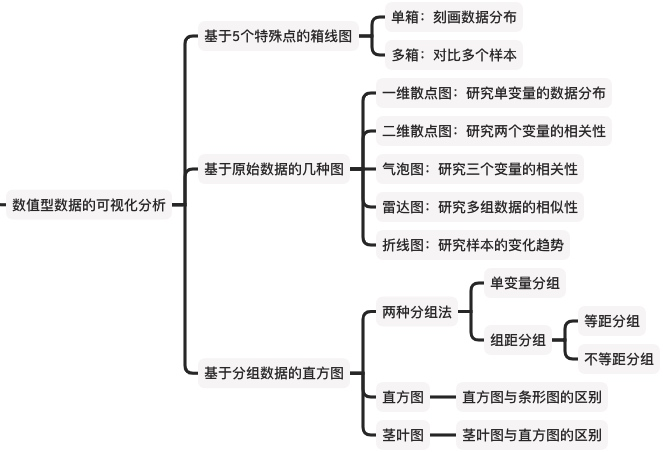
基于5个特殊点的箱线图
绘制箱线图的前提，是先找到一组数据的「最大值、最小值、中位数、上四分位数、下四分位数」。箱线图主要基于5个关键的点，反映原始数据分布的特征。
找到了这五个特殊的值，我们很容易就可以绘制箱线图了。手绘箱线图的具体做法如下：
- 将五个数值画在一条线上,并画竖线标识几个值
- 连接两个四分位数，画出一个箱子
- 中位数一定落在箱子中间，让其竖线超出箱子
例如，基于上文120天销量数据，绘制好的箱线图如下：
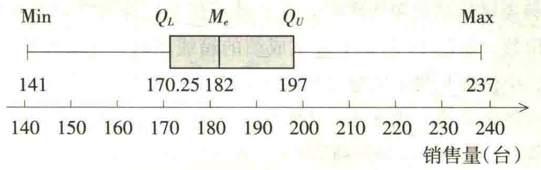
对于多组数据，可以将各组数据的箱线图并列起来，进行分布特征的比较。多组箱线图的手绘比较烦琐，实际应用时可直接使用统计软件来完成。注意，Excel没有箱线图功能。SPSS、Python、R都是具备的。
举个例子：从某大学经济管理专业二年级学生中随机抽取11人，对8门主要课程的考试成绩进行调查，所得结果如表所示： 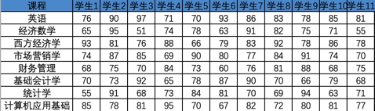
我们想要分析各科考试成绩的分布特征，可以将每科的成绩，看做一组数据，共8组数据。进而，我们可以绘制各科考试成绩的箱线图并分析各科考试成绩的分布特征。
用SPSS得到的箱线图如下： 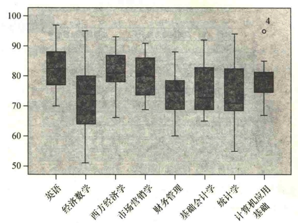
我们可以得到以下信息：
- 从集中数字来看，8门课程中，平均成绩较高的是英语和西方经济学，较低的是经济数学和统计学————因为中位数更高或更低
- 从离散程度来看，英语、西方经济学、财务管理和计算机应用基础的考试成绩比较集中————因为箱子较短，也就是四分位差更小
- 从分布形状来看，英语、市场营销学的成绩分布大体上为对称分布————因为中位数在箱子的中间位置
特别的，SPSS有智能识别离群点的功能。图中，用“O”标记出的点，是4号学生在计算机应用基础中的得分，可以理解为出类拔萃————PS：在SPSS中，把超过四分位差1.5倍距离的数值定义为离群点，用“O”表示；把超过四分位差3倍距离的数值定义为极端值，用“*”表示。
注意这种异常，只是数学计算上的异常。在实际中，可能是数据打错了，也可能是真的有极端情况。对于异常值如何处理，需要具体问题具体分析。
如果你关心的不是哪个学科的老师教学结果更好；而是关心哪个学生的学习成果更好，你可以将每个学生的各科成绩，看做一组数据，共11组数据。同样的，也可以得到一个箱线图：
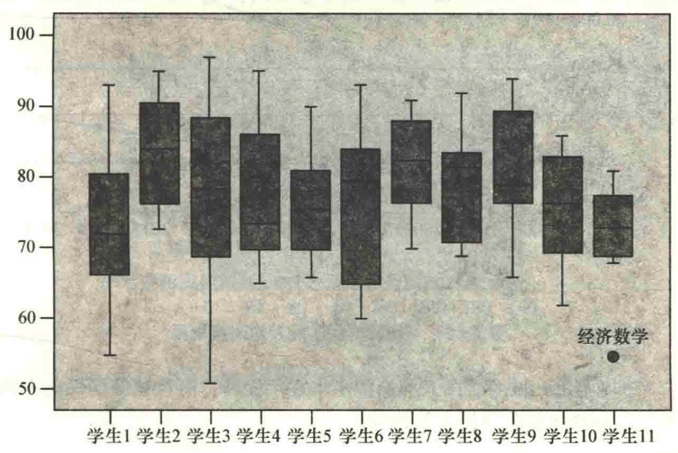
我们可以得到以下信息：
- 2号学生，平均成绩更高，并且各科离散较小，不偏科
- 1号学生，平均成绩更差，并且各科离散较大，有偏科
- 3号学生各科离散程度最大；5号学生各科离散程度最小
- 4、6、8、9号学生，分布不对称，有偏科倾向
- 11号学生，他的经济数学，可以单独了解下情况了
基于原始数据的三种图
基于原始数据，就可以画的图，有：散点图(一维、二维、三维)、折线图、雷达图
一维散点图：研究单变量的数据分布
将一组数据，依次打散点。横轴表示第几个数字，纵轴是数字的值。我们就得到了散点图(seatter diagram)。散点图，也可以看出数据的分布。
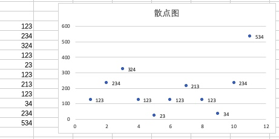
二维散点图：研究两个变量的相关性
散点图是二维的图形，每个散点，都是二维的信息(x,y)。例如上图中第一个点代表了(第一个数字，值为123)。这种情况里，图是二维的图，但是点只表示出了一维的信息。
散点图还可以用来展示两个变量之间的关系。坐标横轴代表变量x，纵轴代表变量y,每组数据(x,y)在坐标系中用一个点表示，n组数据在坐标系中形成的n个点称为散点。
例如我们研究，小麦降雨量与产量之间的关系： 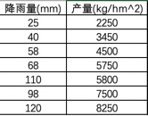
通过绘制如下散点图，我们可以看出，小麦产量与降雨量存在明显的线性正相关关系，随着降雨量的增多，产量也随之增加。
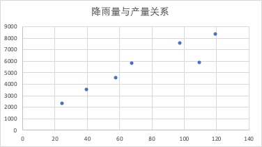
三维散点图：研究三个变量的相关性
但是，小麦的产量，不止跟降雨量有关，还跟温度有关。这时候，我们必须让图中的一个点，可以表示出(x,y,z)三个信息。这时候，气泡图（bubble chart)出现了。 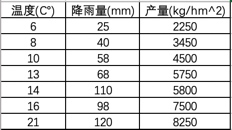
气泡图可用于展示三个变量之间的关系。可以看做是三维的散点图。绘制时将一个变量放在横轴，另一个变量放在纵轴，第三个变量则用气泡的大小来表示。
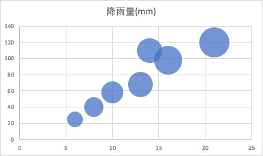
通过气泡图可以看出，随着气温的升高，降雨量也在增加；随着气温和降雨量的增加，小麦的产量也在提高（气泡在变大）。
有同学要问了，在实际生活中，温度、降水、光照、养料等等很多很多个因素都会影响小麦产量，我们该如何分析呢？————还是老话，因为图是二维的，有局限，同时分析三个就不错了。要是想分析更多，后面我会单独写一篇文章讲，如何做多变量情况下的因子分析。
折线图：研究样本的变化趋势
如果数值型数据是在不同时间取得的，即时间序列数据，则可以绘制折线图(line plot)。折线图主要用于反映现象随时间变化的特征。
2006—2015年我国城乡居民人均消费水平数据如下表所示（单位：元）。
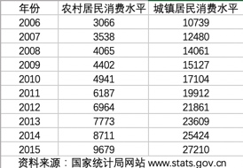
这就是典型的时间序列数据，我们可以绘制折线图。分析城乡居民消费水平的变化趋势和特点。
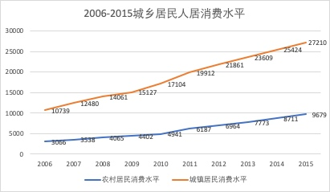
从上图可以看出，城乡居民人均消费水平逐年提高，而且城镇居民的人均消费水平高于农村，2009年以后这种差距有扩大的趋势。
绘制时间序列的折线图，有以下一般习惯：
- 一般情况下，时间一般绘在横轴，观测值绘在纵轴。
- 一般情况下，应绘成横轴略大于纵轴的长方形，其长宽比例大致为10:7。图形过扁或过于瘦高，不仅不美观，而且会给人造成错觉，不利于对数据变化的理解。
- 一般情况下，纵轴数据下端应从“O"开始，以便做比较。如果数据与“O"之间的间距过大，可以采取折断的符号将纵轴折断。
雷达图：研究多组数据的相似性
还有一种情况，我们不是研究不同的维度是否相关，我们希望了解收集到的两组数据样本，是否相似。例如，之前的案例中，我们收集到了北京、天津、上海、重庆的家庭各项平均消费支出的数据。想要知道四市的相似性。
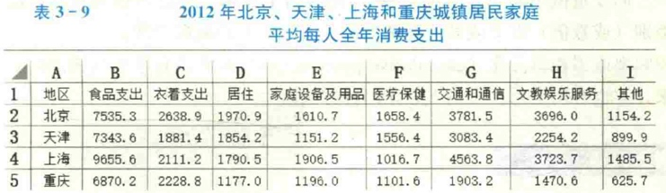
复习一下，咱之前，讲过环形图：
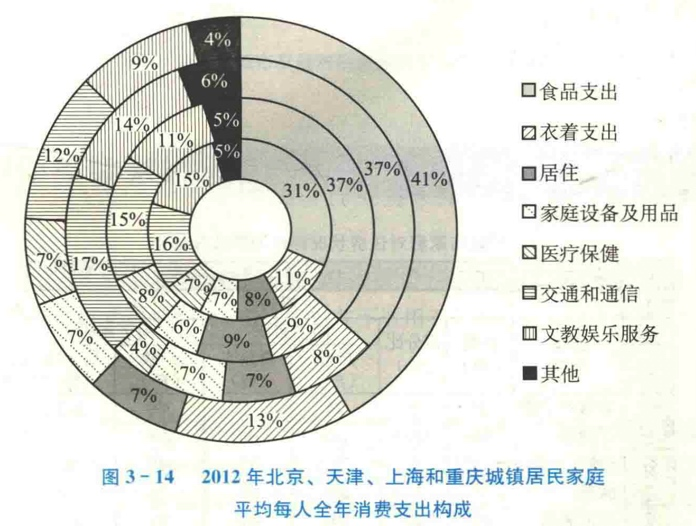
今天，咱讲雷达图(radar chart)。雷达图是显示多个变量的常用图示方法，也称为蜘蛛图(spider chart)。
设有n组样本S1,S2…,Sn,每个样本测得P个变量X1,X2…,Xp。要绘制这P个变量的雷达图，具体做法是：先画一个圆，然后将圆P等分，得到P个点，令这P个点分别对应P个变量，再将这P个点与圆心连线，得到P个辐射状的半径，这P个半径分别作为P个变量的坐标轴。每个变量值的大小由半径上的点到圆心的距离表示，再将同一样本的值在P个坐标上的点连线。这样，n个样本形成的n个多边形就是一张雷达图。
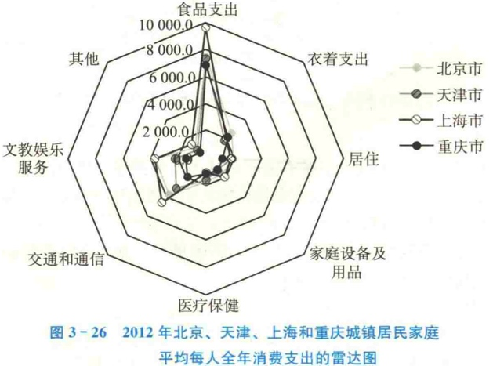
通过雷达图，可以得到以下信息：
- 雷达图在显示或对比各变量的数值总和时十分有用。四个地区的家庭平均每人消费支出中，食品支出都是最多的，其他支出则是最少的
- 假定各变量的取值具有相同的正负号，则总的绝对值与图形所围成的区域成正比。上海的平均每人各项消费支出均比较高，其次是北京、天津和重庆
- 利用雷达图可以研究多个样本之间的相似程度。从雷达图所闱成的形状看，四个地区的家庭平均每人消费支出的结构十分相似
基于分组数据的直方图
上文，我们讲了两种分组统计方法：
- 单变量值分组统计法：适用于离散、变量值unicle值少的情况
- 组距分组统计法：根据各组组距是否相等，分为等距分组和不等距分组
但他们的结果，都是一张频率分布表：
- 单变量分组法形成的，可以绘制条形图。
- 组距分组统计法形成的，可以绘制直方图。 我们重点介绍直方图。
直方图(histogram)是用于展示分组数据分布的一种图形，它是用矩形的宽度和高度（即面积）来表示频数分布的。
绘制该图时，在平面直角坐标中，用横轴表示数据分组，纵轴表示频数或频率，这样，各组与相应的频数就形成了一个矩形，即直方图。
例如下图，是对于前面120天销量数据，进行等距分组的分组统计结果： 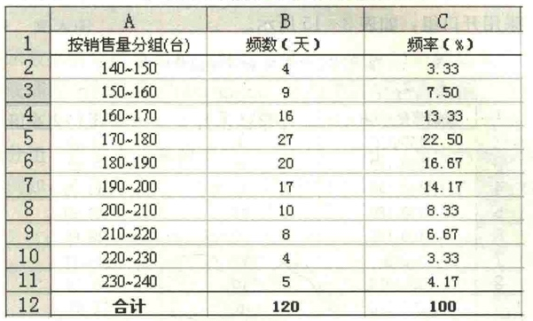
绘制的直方图如下： 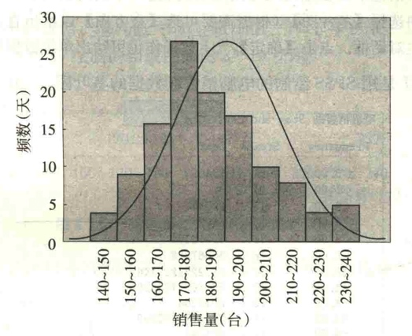
从图上可以直观地看出，电脑销售量的分布右边的尾部比左边的尾部长一些，略微有一些右偏分布。
直方图与条形图不同，条形图主要用于展示分类数据，而直方图则主要用于展示数值型数据
- 首先，两者的本质区别，根本就在于条形的宽度，表示的实际意义不用。条形图是用条形的长度（横置时）表示各类别频数的多少，其宽度（表示类别）则是固定的；直方图是用面积表示各组频数的多少，矩形的高度表示每一组的频数或频率，宽度则表示各组的组距，因此其高度与宽度均有意义
- 其次，两者的绘图区别，有两点习惯的不同。(1)由于分组数据具有连续性，直方图的各矩形通常是连续排列，而条形图则是分开排列;(2)条形图，可以横着放，也可以竖着放。而直方图，习惯上，总是喜欢竖着放。
最后还有一种图，叫做茎叶图(stem-and-leaf display)。茎叶图类似于横置的直方图，它既能给出数据的分布状况，又能给出每一个原始数值，即保留了原始数据的信息。
由于Excel中没有绘制茎叶图的功能，SPSS、R、Python有。我们示意一下，不展开。
下面是用Spss绘制的120天销售额的茎叶图： 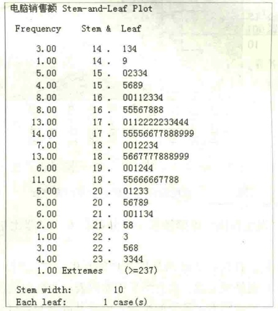
直方图虽然能很好地显示数据的分布，但不能保留原始的数值。在应用方面，直方图通常适用于大批量数据，茎叶图通常适用于小批量数据。
总结
本节内容，总结如下：
感谢大家，下期再见。
参考文献：
- 孙静娟主编.《统计学》.清华大学出版社.2015：18-20.
- 袁卫,刘超.《统计学--思想、方法与应用》(第二版).中国人民大学出版社.2011.
- 贾俊平,何晓群,金勇进.《统计学》(第七版).中国人民大学出版社.2018.